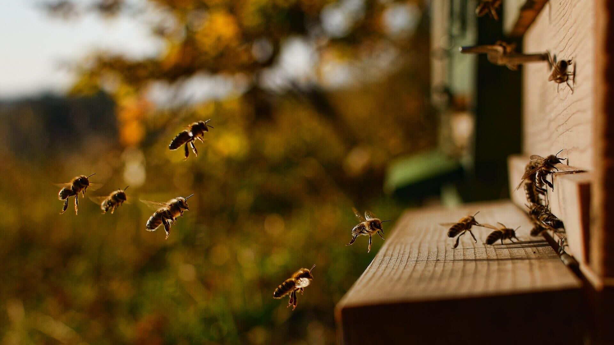

Росавиация хочет регламентировать полёты пчёл
Росавиация предлагает, начиная с 2022 года, ввести ограничения на полёты пчёл, ос, шершней и других летучих насекомых. В ведомстве пояснили, что представители этих биологических видов создают помехи для безопасности движения воздушных судов гражданской авиации. Помимо непосредственного попадания в двигатели самолётов, они общаются на частотах, в отдельных случаях совпадающих с каналами связи пилотов.
14 марта 2021, 16:35
«Росавиация считает целесообразным определить специализированные коридоры для полёта насекомых и ограничить их по времени. В частности, ввести запрет на полёты в тёмное время суток. Также пчёлы должны придерживаться правил и не прокладывать маршруты через установленные бесполётные зоны», - рассказал глава ведомства Александр Нерадько. Для мониторинга соблюдения установленных правил насекомыми при Росавиации будет создана специальная служба - Роснасекомконтроль. Совместно с Роспчеловодством её эксперты создадут единую базу летучих насекомых страны. Для ускорения процесса чиновники предлагают обязать всех пчеловодов страны подать в ближайшие полгода личные данные своих подопечных. В противном случае их ожидают штрафы или уголовное наказание в случае падения гражданских самолётов. «Пасечники ответственны за своих пчёл, так же, как и владельцы домашних животных. Поэтому перед полётом они обязаны получить разрешение в Росавиации. Мы в письменной форме выдадим им разрешение с указанием координат для полётов», - заключил Нерадько. В случае нарушения насекомыми лётных правил Росавиация сможет задействовать ультразвук для предотвращения их полётов в неположенных местах, а также обратиться к ВКС для задействования средств ПВО.